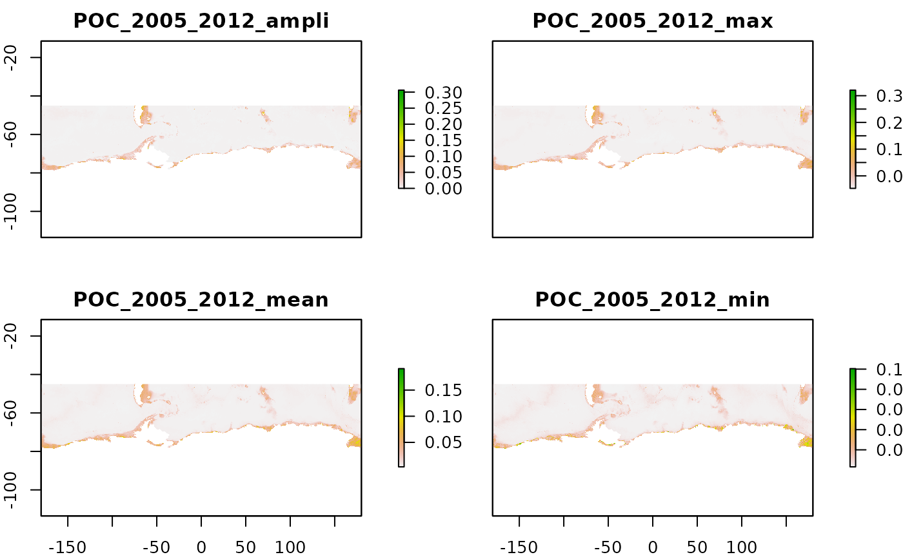

Species Distribution Modelling is a correlative approach that helps assess the relationship between species occurrence records and their surrounding environmental conditions. Studying the distribution of benthic species in the Southern Ocean constitutes an interesting approach to interpolate the little amount of information we have in this broad scale and poorly accessible area. We provide here a set of environmental descriptors suitable for the modelling work. The present vignette describes the procedure to select and download them.
The present dataset is composed of 58 environmental descriptors, set at a 0.1° grid-cell resolution, on the Southern Ocean extent (80°S,45°S; -180,180°). Layers are provided as a netCDF file format.
1/ depth
Description: Bathymetry. Dowloaded from GEBCO 2014 (0.0083 degrees = 30sec arcmin resolution) and set at resolution 0.1 degrees. Then completed with the bathymetry layer manually corrected and provided in Fabri-Ruiz et al. (2017)
Value range: -8038.722 - 0
Units: m
Source: This study. Derived from GEBCO
URL: https://www.gebco.net/data_and_products/gridded_bathymetry_data/
Citation: Fabri-Ruiz S, Saucede T, Danis B and David B (2017). Southern Ocean Echinoids database_An updated version of Antarctic, Sub-Antarctic and cold temperate echinoid database. ZooKeys, (697), 1.
2/ geomorphology
Description: Last update on biodiversity.aq portal. Derived from O’Brien et al. (2009) seafloor geomorphic feature dataset. Mapping based on GEBCO contours, ETOPO2, seismic lines).
Value range: 27 categories
Units: categorical
Source: This study. Derived from Australian Antarctic Data Centre
URL: https://data.aad.gov.au/metadata/records/Polar_Environmental_Data
Citation: O’Brien, P.E., Post, A.L., and Romeyn, R. (2009) Antarctic-wide geomorphology as an aid to habitat mapping and locating vulnerable marine ecosystems. CCAMLR VME Workshop 2009. Document WS-VME-09/10
3/ sediments
Description: Sediment features
Value range: 14 categories
Units: categorical
Source: Griffiths 2014 (unpublished)
URL: http://share.biodiversity.aq/GIS/antarctic/
4/ slope
Description: Seafloor slope derived from bathymetry with the terrain function of raster R package. Computation according to Horn (1981), ie option neighbor=8. The computation was done on the GEBCO bathymetry layer (0.0083 degrees resolution) and the resolution was then changed to 0.1 degrees. Unit set at degrees.
Value range: 0.000252378 - 16.94809
Units: degrees
Source: This study. Derived from GEBCO
URL: https://www.gebco.net/data_and_products/gridded_bathymetry_data/
Citation: Horn, B.K.P., 1981. Hill shading and the reflectance map. Proceedings of the IEEE 69:14-47
5/ roughness
Description: Seafloor roughness derived from bathymetry with the terrain function of raster R package. Roughness is the difference between the maximum and the minimum value of a cell and its 8 surrounding cells. The computation was done on the GEBCO bathymetry layer (0.0083 degrees resolution) and the resolution was then changed to 0.1 degrees.
Value range: 0 - 5171.278
Units: unitless
Source: This study. Derived from GEBCO
URL: https://www.gebco.net/data_and_products/gridded_bathymetry_data/
6/ mixed_layer_depth
Description: Summer mixed layer depth climatology from ARGOS data. Regridded from 2-degree grid using nearest neighbour interpolation
Value range: 13.79615 - 461.5424
Units: m
Source: https://data.aad.gov.au/metadata/records/Polar_Environmental_Data
7/ seasurface_current_speed
Description: Current speed near the surface (2.5m depth), derived from the CAISOM model (Galton-Fenzi et al. 2012, based on ROMS model)
Value range: 1.50E-04 - 1.7
Units: m/s
Source: This study. Derived from Australia Antarctic Data Centre
URL: https://data.aad.gov.au/metadata/records/Polar_Environmental_Data
Citation: see Galton-Fenzi BK, Hunter JR, Coleman R, Marsland SJ, Warner RC (2012) Modeling the basal melting and marine ice accretion of the Amery Ice Shelf. Journal of Geophysical Research: Oceans, 117, C09031.http://dx.doi.org/10.1029/2012jc008214,
8/ seafloor_current_speed
Description: Current speed near the sea floor, derived from the CAISOM model (Galton-Fenzi et al. 2012, based on ROMS)
Value range: 3.40E-04 - 0.53
Units: m/s
Source: This study. Derived from Australia Antarctic Data Centre
URL: https://data.aad.gov.au/metadata/records/Polar_Environmental_Data
Citation: see Galton-Fenzi BK, Hunter JR, Coleman R, Marsland SJ, Warner RC (2012) Modeling the basal melting and marine ice accretion of the Amery Ice Shelf. Journal of Geophysical Research: Oceans, 117, C09031.http://dx.doi.org/10.1029/2012jc008214,
9/ distance_antarctica
Description: Distance to the nearest part of the Antarctic continent
Value range: 0 - 3445
Units: km
Source: https://data.aad.gov.au/metadata/records/Polar_Environmental_Data
10/ distance_canyon
Description: Distance to the axis of the nearest canyon
Value range: 0 - 3117
Units: km
Source: https://data.aad.gov.au/metadata/records/Polar_Environmental_Data
11/ distance_max_ice_edge
Description: Distance to the mean maximum winter sea ice extent (derived from daily estimates of sea ice concentration)
Value range: -2614.008 - 2314.433
Units: km
Source: https://data.aad.gov.au/metadata/records/Polar_Environmental_Data
12/ distance_shelf
Description: Distance to nearest area of seafloor of depth 500m or shallower
Value range: -1296 - 1750
Units: km
Source: https://data.aad.gov.au/metadata/records/Polar_Environmental_Data
13/ ice_cover_max
Description: Ice concentration fraction, maximum on [1957-2017] time period
Value range: 0 - 1
Units: unitless
Source: BioOracle accessed 24/04/2018, see Assis et al. (2018)
URL: http://www.bio-oracle.org/
Citation: Assis J, Tyberghein L, Bosch S, Verbruggen H, Serrao EA and De Clerck O (2018). Bio_ORACLE v2. 0: Extending marine data layers for bioclimatic modelling. Global Ecology and Biogeography, 27(3), 277-284, see also https://www.ecmwf.int/en/research/climate-reanalysis/ocean-reanalysis
14/ ice_cover_mean
Description: Ice concentration fraction, mean on [1957-2017] time period
Value range: 0 - 0.9708595
Units: unitless
Source: BioOracle accessed 24/04/2018, see Assis et al. (2018)
URL: http://www.bio-oracle.org/
Citation: Assis J, Tyberghein L, Bosch S, Verbruggen H, Serrao EA and De Clerck O (2018). Bio_ORACLE v2. 0: Extending marine data layers for bioclimatic modelling. Global Ecology and Biogeography, 27(3), 277-284 , see also https://www.ecmwf.int/en/research/climate-reanalysis/ocean-reanalysis
15/ ice_cover_min
Description: Ice concentration fraction, minimum on [1957-2017] time period
Value range: 0 - 0.8536261
Units: unitless
Source: BioOracle accessed 24/04/2018, see Assis et al. (2018)
URL: http://www.bio-oracle.org/
Citation: Assis J, Tyberghein L, Bosch S, Verbruggen H, Serrao EA and De Clerck O (2018). Bio_ORACLE v2. 0: Extending marine data layers for bioclimatic modelling. Global Ecology and Biogeography, 27(3), 277-284 , see also https://www.ecmwf.int/en/research/climate-reanalysis/ocean-reanalysis
16/ ice_cover_range
Description: Ice concentration fraction, difference maximum-minimum on [1957-2017] time period
Value range: 0 - 1
Units: unitless
Source: BioOracle accessed 24/04/2018, see Assis et al. (2018)
URL: http://www.bio-oracle.org/
Citation: Assis J, Tyberghein L, Bosch S, Verbruggen H, Serrao EA and De Clerck O (2018). Bio_ORACLE v2. 0: Extending marine data layers for bioclimatic modelling. Global Ecology and Biogeography, 27(3), 277-284 , see also https://www.ecmwf.int/en/research/climate-reanalysis/ocean-reanalysis
17/ ice_thickness_max
Description: Ice thickness, maximum on [1957-2017] time period
Value range: 0 - 3.471811
Units: m
Source: BioOracle accessed 24/04/2018, see Assis et al. (2018)
URL: http://www.bio-oracle.org/
Citation: Assis J, Tyberghein L, Bosch S, Verbruggen H, Serrao EA and De Clerck O (2018). Bio_ORACLE v2. 0: Extending marine data layers for bioclimatic modelling. Global Ecology and Biogeography, 27(3), 277-284 , see also https://www.ecmwf.int/en/research/climate-reanalysis/ocean-reanalysis
18/ ice_thickness_mean
Description: Ice thickness, mean on [1957-2017] time period
Value range: 0 - 1.614133
Units: m
Source: BioOracle accessed 24/04/2018, see Assis et al. (2018)
URL: http://www.bio-oracle.org/
Citation: Assis J, Tyberghein L, Bosch S, Verbruggen H, Serrao EA and De Clerck O (2018). Bio_ORACLE v2. 0: Extending marine data layers for bioclimatic modelling. Global Ecology and Biogeography, 27(3), 277-284 , see also https://www.ecmwf.int/en/research/climate-reanalysis/ocean-reanalysis
19/ ice_thickness_min
Description: Ice thickness, minimum on [1957-2017] time period
Value range: 0 - 0.7602701
Units: m
Source: BioOracle accessed 24/04/2018, see Assis et al. (2018)
URL: http://www.bio-oracle.org/
Citation: Assis J, Tyberghein L, Bosch S, Verbruggen H, Serrao EA and De Clerck O (2018). Bio_ORACLE v2. 0: Extending marine data layers for bioclimatic modelling. Global Ecology and Biogeography, 27(3), 277-284 , see also https://www.ecmwf.int/en/research/climate-reanalysis/ocean-reanalysis
20/ ice_thickness_range
Description: Ice thickness, difference maximum-minimim on [1957-2017] time period
Value range: 0 - 3.471811
Units: m
Source: BioOracle accessed 24/04/2018, see Assis et al. (2018)
URL: http://www.bio-oracle.org/
Citation: Assis J, Tyberghein L, Bosch S, Verbruggen H, Serrao EA and De Clerck O (2018). Bio_ORACLE v2. 0: Extending marine data layers for bioclimatic modelling. Global Ecology and Biogeography, 27(3), 277-284 , see also https://www.ecmwf.int/en/research/climate-reanalysis/ocean-reanalysis
21/ chla_ampli_alltime_2005_2012
Description: Chlorophyll-a concentrations obtained from MODIS satellite data. Amplitude of pixel values (difference betwenn maximal and minimal value encountered by each pixel during all months of the period [2005-2012])
Value range: 0 - 77.15122
Units: mg/m^3
Source: https://oceandata.sci.gsfc.nasa.gov/MODIS-Aqua/Mapped/Monthly/9km/chlor_a/
URL: https://modis.gsfc.nasa.gov/data/dataprod/chlor_a.php
22/ chla_max_alltime_2005_2012
Description: Chlorophyll-a concentrations obtained from MODIS satellite data. Maximal value encountered by each pixel during all months of the period [2005-2012]
Value range: 0 - 77.28562
Units: mg/m^3
Source: https://oceandata.sci.gsfc.nasa.gov/MODIS-Aqua/Mapped/Monthly/9km/chlor_a/
URL: https://modis.gsfc.nasa.gov/data/dataprod/chlor_a.php
23/ chla_mean_alltime_2005_2012
Description: Chlorophyll-a concentrations obtained from MODIS satellite data. Mean value of each pixel during all months of the period [2005-2012]
Value range: 0 - 30.42691
Units: mg/m^3
Source: https://oceandata.sci.gsfc.nasa.gov/MODIS-Aqua/Mapped/Monthly/9km/chlor_a/
URL: https://modis.gsfc.nasa.gov/data/dataprod/chlor_a.php
24/ chla_min_alltime_2005_2012
Description: Chlorophyll-a concentrations obtained from MODIS satellite data. Minimal value encountered by each pixel during all months of the period [2005-2012]
Value range: 0 - 29.02929
Units: mg/m^3
Source: https://oceandata.sci.gsfc.nasa.gov/MODIS-Aqua/Mapped/Monthly/9km/chlor_a/
URL: https://modis.gsfc.nasa.gov/data/dataprod/chlor_a.php
25/ chla_sd_alltime_2005_2012
Description: Chlorophyll-a concentrations obtained from MODIS satellite data. Standard deviation value of each pixel during all months of the period [2005-2012]
Value range: 0 - 27.9877
Units: mg/m^3
Source: https://oceandata.sci.gsfc.nasa.gov/MODIS-Aqua/Mapped/Monthly/9km/chlor_a/
URL: https://modis.gsfc.nasa.gov/data/dataprod/chlor_a.php
26/ POC_2005_2012_ampli
Description: Particulate organic carbon, model Lutz et al. (2007). Amplitude value (difference maximal and minimal value, see previous layers) all seasonal layers [2005-2012]
Value range: 0 - 1.31761
Units: g/m^2/d
Source: This study. Following Lutz et al. (2007)
URL: https://data.aad.gov.au/metadata/records/Particulate_carbon_export_flux_layers
Citation: Lutz MJ, Caldeira K, Dunbar RB and Behrenfeld MJ (2007). Seasonal rhythms of net primary production and particulate organic carbon flux to depth describe the efficiency of biological pump in the global ocean. Journal of Geophysical Research: Oceans, 112(C10).
27/ POC_2005_2012_max
Description: Particulate organic carbon, model Lutz et al. (2007). Maximal value encountered on each pixel among all seasonal layers [2005-2012]
Value range: 0.00332562 - 1.376601
Units: g/m^2/d
Source: This study. Following Lutz et al. (2007)
URL: https://data.aad.gov.au/metadata/records/Particulate_carbon_export_flux_layers
Citation: Lutz MJ, Caldeira K, Dunbar RB and Behrenfeld MJ (2007). Seasonal rhythms of net primary production and particulate organic carbon flux to depth describe the efficiency of biological pump in the global ocean. Journal of Geophysical Research: Oceans, 112(C10).
28/ POC_2005_2012_mean
Description: Particulate organic carbon, model Lutz et al. (2007). Mean all seasonal layers [2005-2012]
Value range: 0.003184335 - 0.5031364
Units: g/m^2/d
Source: This study. Following Lutz et al. (2007)
URL: https://data.aad.gov.au/metadata/records/Particulate_carbon_export_flux_layers
Citation: Lutz MJ, Caldeira K, Dunbar RB and Behrenfeld MJ (2007). Seasonal rhythms of net primary production and particulate organic carbon flux to depth describe the efficiency of biological pump in the global ocean. Journal of Geophysical Research: Oceans, 112(C10).
29/ POC_2005_2012_min
Description: Particulate organic carbon, model Lutz et al. (2007). Minimal value encountered on each pixel among all seasonal layers [2005-2012]
Value range: 0.003116508 - 0.1313119
Units: g/m^2/d
Source: This study. Following Lutz et al. (2007)
URL: https://data.aad.gov.au/metadata/records/Particulate_carbon_export_flux_layers
Citation: Lutz MJ, Caldeira K, Dunbar RB and Behrenfeld MJ (2007). Seasonal rhythms of net primary production and particulate organic carbon flux to depth describe the efficiency of biological pump in the global ocean. Journal of Geophysical Research: Oceans, 112(C10).
30/ POC_2005_2012_sd
Description: Particulate organic carbon, model Lutz et al. (2007). Standard deviation all seasonal layers [2005-2012]
Value range: 3.85E-08 - 0.4417001
Units: g/m^2/d
Source: This study. Following Lutz et al. (2007)
URL: https://data.aad.gov.au/metadata/records/Particulate_carbon_export_flux_layers
Citation: Lutz MJ, Caldeira K, Dunbar RB and Behrenfeld MJ (2007). Seasonal rhythms of net primary production and particulate organic carbon flux to depth describe the efficiency of biological pump in the global ocean. Journal of Geophysical Research: Oceans, 112(C10).
31/ seafloor_oxy_19552012_ampli
Description: Amplitude (difference maximum-minimum) value encountered for each pixel on all month layers of seafloor oxygen concentration over [1955-2012], modified from WOCE
Value range: 0.001755714 - 5.285187
Units: mL/L
Source: Derived from World Ocean Circulation Experiment 2013
URL: https://www.nodc.noaa.gov/OC5/woa13/woa13data.html
32/ seafloor_oxy_19552012_max
Description: Maximum value encountered for each pixel on all month layers of oxygen concentration over [1955-2012], modified from WOCE
Value range: 3.059685 - 11.52433
Units: mL/L
Source: Derived from World Ocean Circulation Experiment 2013
URL: https://www.nodc.noaa.gov/OC5/woa13/woa13data.html
33/ seafloor_oxy_19552012_mean
Description: Mean seafloor oxygen concentration over [1955-2012] (average of all monthly layers), modified from WOCE
Value range: 2.836582 - 8.858084
Units: mL/L
Source: Derived from World Ocean Circulation Experiment 2013
URL: https://www.nodc.noaa.gov/OC5/woa13/woa13data.html
34/ seafloor_oxy_19552012_min
Description: Minimum value encountered for each pixel on all month layers of seafloor oxygen concentration over [1955-2012], modified from WOCE
Value range: 0.4315577 - 8.350794
Units: mL/L
Source: Derived from World Ocean Circulation Experiment 2013
URL: https://www.nodc.noaa.gov/OC5/woa13/woa13data.html
35/ seafloor_oxy_19552012_sd
Description: Standard deviation seafloor oxygen concentration over [1955-2012] (of all monthly layers), modified from WOCE
Value range: 0.000427063 - 1.588707
Units: mL/L
Source: Derived from World Ocean Circulation Experiment 2013
URL: https://www.nodc.noaa.gov/OC5/woa13/woa13data.html
36/ seafloor_sali_2005_2012_ampli
Description: Amplitude (difference maximum-minimum) value encountered for each pixel on all month layers of seafloor salinity over [2005-2012], modified from WOCE
Value range: 0.000801086 - 4.249901
Units: PSU
Source: Derived from World Ocean Circulation Experiment 2013
URL: https://www.nodc.noaa.gov/OC5/woa13/woa13data.html
37/ seafloor_sali_2005_2012_max
Description: Maximum value encountered for each pixel on all month layers of seafloor salinity over [2005-2012], modified from WOCE
Value range: 32.90105 - 35.3997
Units: PSU
Source: Derived from World Ocean Circulation Experiment 2013
URL: https://www.nodc.noaa.gov/OC5/woa13/woa13data.html
38/ seafloor_sali_2005_2012_mean
Description: Mean seafloor salinity over [2005-2012] (average of all monthly layers), modified from WOCE
Value range: 32.51107 - 35.03207
Units: PSU
Source: Derived from World Ocean Circulation Experiment 2013
URL: https://www.nodc.noaa.gov/OC5/woa13/woa13data.html
39/ seafloor_sali_2005_2012_min
Description: Minimum value encountered for each pixel on all month layers of seafloor salinity over [2005-2012], modified from WOCE
Value range: 29.8904 - 34.97735
Units: PSU
Source: Derived from World Ocean Circulation Experiment 2013
URL: https://www.nodc.noaa.gov/OC5/woa13/woa13data.html
40/ seafloor_sali_2005_2012_sd
Description: Standard deviation seafloor salinity over [2005-2012] (of all monthly layers), modified from WOCE
Value range: 0.000251834 - 1.36245
Units: PSU
Source: Derived from World Ocean Circulation Experiment 2013
URL: https://www.nodc.noaa.gov/OC5/woa13/woa13data.html
41/ seafloor_temp_2005_2012_ampli
Description: Amplitude (difference maximum-minimum) value encountered for each pixel on all month layers of seafloor temperature over [2005-2012], modified from WOCE
Value range: 0.0086 - 8.625669
Units: degrees C
Source: Derived from World Ocean Circulation Experiment 2013
URL: https://www.nodc.noaa.gov/OC5/woa13/woa13data.html
42/ seafloor_temp_2005_2012_max
Description: Maximum value encountered for each pixel on all month layers of seafloor temperature over [2005-2012], modified from WOCE
Value range: -2.021455 - 15.93171
Units: degrees C
Source: Derived from World Ocean Circulation Experiment 2013
URL: https://www.nodc.noaa.gov/OC5/woa13/woa13data.html
43/ seafloor_temp_2005_2012_mean
Description: Mean seafloor temperature over [2005-2012] (average of all monthly layers), modified from WOCE
Value range: -2.085796 - 13.23161
Units: degrees C
Source: Derived from World Ocean Circulation Experiment 2013
URL: https://www.nodc.noaa.gov/OC5/woa13/woa13data.html
44/ seafloor_temp_2005_2012_min
Description: Minimum value encountered for each pixel on all month layers of seafloor temperature over [2005-2012], modified from WOCE
Value range: -2.1 - 11.6431
Units: degrees C
Source: Derived from World Ocean Circulation Experiment 2013
URL: https://www.nodc.noaa.gov/OC5/woa13/woa13data.html
45/ seafloor_temp_2005_2012_sd
Description: Standard deviation seafloor temperature over [2005-2012] (of all monthly layers), modified from WOCE
Value range: 0.002843571 - 2.877084
Units: degrees C
Source: Derived from World Ocean Circulation Experiment 2013
URL: https://www.nodc.noaa.gov/OC5/woa13/woa13data.html
46/ extreme_event_max_chl_2005_2012_ampli
Description: Amplitude (difference maximum-minimum) number of the number of extreme events calculated between 2005 and 2012
Value range: integer values 0 - 3
Units: unitless
Source: derived from chlorophyll-a concentration layers
47/ extreme_event_max_chl_2005_2012_max
Description: Maximum number of extreme events calculated between 2005 and 2012
Value range: integer values 0 - 5
Units: unitless
Source: derived from chlorophyll-a concentration layers
48/ extreme_event_max_chl_2005_2012_mean
Description: Mean of the number of extreme events calculated between 2005 and 2012
Value range: 0 - 3.875
Units: unitless
Source: derived from chlorophyll-a concentration layers
49/ extreme_event_max_chl_2005_2012_min
Description: Minimum number of extreme events calculated between 2005 and 2012
Value range: integer values 0 - 5
Units: unitless
Source: derived from chlorophyll-a concentration layers
50/ extreme_event_min_chl_2005_2012_ampli
Description: Amplitude (difference maximum-minimum) number of the number of extreme events calculated between 2005 and 2012
Value range: integer values 0 - 9
Units: unitless
Source: derived from chlorophyll-a concentration layers
51/ extreme_event_min_chl_2005_2012_max
Description: Maximum number of extreme events calculated between 2005 and 2012
Value range: integer values 0 - 11
Units: unitless
Source: derived from chlorophyll-a concentration layers
52/ extreme_event_min_chl_2005_2012_mean
Description: Mean of the number of extreme events calculated between 2005 and 2012
Value range: integer values 0 - 11
Units: unitless
Source: derived from chlorophyll-a concentration layers
53/ extreme_event_min_chl_2005_2012_min
Description: Minimum number of extreme events calculated between 2005 and 2012
Value range: integer values 0 - 11
Units: unitless
Source: derived from chlorophyll-a concentration layers
54/ extreme_event_min_oxy_1955_2012_nb
Description: Amplitude (difference maximum-minimum) number of the number of extreme events calculated between 2005 and 2012
Value range: integer values 0 - 9
Units: unitless
Source: derived from oxygen concentration layers
55/ nb_extreme_event_max_sali_2005_2012_nb
Description: Number of extreme events (minimal seafloor oxygen concentration records) that happened between January and December of the year
Value range: integer values 0 - 12
Units: unitless
Source: derived from salinity concentration layers
56/ nb_extreme_event_min_sali_2005_2012_nb
Description: Number of extreme events (maximal seafloor salinity records) that happened between January and December of the year
Value range: integer values 0 - 12
Units: unitless
Source: derived from salinity concentration layers
57/ extreme_event_max_temp_2005_2012_nb
Description: Number of extreme events (maximal seafloor temperature records) that happened between January and December of the year
Value range: integer values 0 - 12
Units: unitless
Source: derived from temperature concentration layers
58/ extreme_event_min_temp_2005_2012_nb
Description: Number of extreme events (minimal seafloor temperature records) that happened between January and December of the year
Value range: integer values 0 - 12
Units: unitless
Source: derived from temperature concentration layers
The full metadata file, giving details on each of the data sources, is available from https://data.aad.gov.au/metadata/records/environmental_layers.
The first steps to download the data are to define the directory in which the data will be stored. In this example, we use a temporary folder.
library(blueant)
my_data_directory <- tempdir()
## the data source we want
data_source <- sources_sdm("Southern Ocean marine environmental data")
## put these together into a blueant configuration
config <- bb_config(my_data_directory) %>% bb_add(data_source)
config## Local file root: C:\Users\ben_ray\AppData\Local\Temp\RtmpotaunQ
##
## # Data group: Modelling
##
## ## Southern Ocean marine environmental data
## A collection of gridded marine environmental data layers suitable for use in Southern Ocean species distribution modelling. All environmental layers have been generated at a spatial resolution of 0.1 degrees, covering the Southern Ocean extent (80 degrees S - 45 degrees S, -180 - 180 degrees). The layers include information relating to bathymetry, sea ice, ocean currents, primary production, particulate organic carbon, and other oceanographic data.
## Approximate size: 0.1 GB
## Documentation link: https://doi.org/10.26179/5b8f30e30d4f3
## Citation: Guillaumot C, Raymond B, Danis B (2018) Marine environmental data layers for Southern Ocean species distribution modelling. Australian Antarctic Data Centre - doi:10.26179/5b8f30e30d4f3
## License: CC-BY
## Local file system paths: C:/Users/ben_ray/AppData/Local/Temp/RtmpotaunQ/data.aad.gov.au/eds/4742
## Associated access functions: raster::stackNow we can ask blueant to fetch and unpack the data:
status <- bb_sync(config, verbose = TRUE)##
## Thu Sep 20 02:27:11 2018
## Synchronizing dataset: Southern Ocean marine environmental data
## Source URL https://data.aad.gov.au/eds/4742/download
## --------------------------------------------------------------------------------------------
##
## this dataset path is: C:\Users\ben_ray\AppData\Local\Temp\RtmpotaunQ/data.aad.gov.au/eds/4742
## building file list ... done.
## downloading file 1 of 1: https://data.aad.gov.au/eds/4742/download ... done.
## decompressing: C:\Users\ben_ray\AppData\Local\Temp\RtmpotaunQ/data.aad.gov.au/eds/4742/download.zip ... extracting 60 files into C:/Users/ben_ray/AppData/Local/Temp/RtmpotaunQ/data.aad.gov.au/eds/4742 ... done.
##
## Thu Sep 20 02:27:42 2018 dataset synchronization complete: Southern Ocean marine environmental dataThe verbose = TRUE argument helps to display the progress output. Once completed, the status object provides some information about the files that were downloaded. In particular, the downloaded netCDF files can be listed with:
nc_files <- Filter(function(z) grepl("\\.nc$", z), status$files[[1]]$file)
## the first few files
head(basename(nc_files))## [1] "chla_ampli_alltime_2005_2012.nc" "chla_max_alltime_2005_2012.nc"
## [3] "chla_mean_alltime_2005_2012.nc" "chla_min_alltime_2005_2012.nc"
## [5] "chla_sd_alltime_2005_2012.nc" "depth.nc"And then you can open your data with the raster package
library(raster)
## create a raster stack of all layers
x <- stack(nc_files)
## the layers in this object
names(x)## [1] "chla_ampli_alltime_2005_2012"
## [2] "chla_max_alltime_2005_2012"
## [3] "chla_mean_alltime_2005_2012"
## [4] "chla_min_alltime_2005_2012"
## [5] "chla_sd_alltime_2005_2012"
## [6] "depth"
## [7] "distance_antarctica"
## [8] "distance_canyon"
## [9] "distance_max_ice_edge"
## [10] "distance_shelf"
## [11] "extreme_event_max_chl_2005_2012_ampli"
## [12] "extreme_event_max_chl_2005_2012_max"
## [13] "extreme_event_max_chl_2005_2012_mean"
## [14] "extreme_event_max_chl_2005_2012_min"
## [15] "extreme_event_max_sali_2005_2012_nb"
## [16] "extreme_event_max_temp_2005_2012_nb"
## [17] "extreme_event_min_chl_2005_2012_ampli"
## [18] "extreme_event_min_chl_2005_2012_max"
## [19] "extreme_event_min_chl_2005_2012_mean"
## [20] "extreme_event_min_chl_2005_2012_min"
## [21] "extreme_event_min_oxy_1955_2012_nb"
## [22] "extreme_event_min_sali_2005_2012_nb"
## [23] "extreme_event_min_temp_2005_2012_nb"
## [24] "geomorphology"
## [25] "ice_cover_max"
## [26] "ice_cover_mean"
## [27] "ice_cover_min"
## [28] "ice_cover_range"
## [29] "ice_thickness_max"
## [30] "ice_thickness_mean"
## [31] "ice_thickness_min"
## [32] "ice_thickness_range"
## [33] "mixed_layer_depth"
## [34] "POC_2005_2012_ampli"
## [35] "POC_2005_2012_max"
## [36] "POC_2005_2012_mean"
## [37] "POC_2005_2012_min"
## [38] "POC_2005_2012_sd"
## [39] "roughness"
## [40] "seafloor_current_speed"
## [41] "seafloor_oxy_19552012_ampli"
## [42] "seafloor_oxy_19552012_max"
## [43] "seafloor_oxy_19552012_mean"
## [44] "seafloor_oxy_19552012_min"
## [45] "seafloor_oxy_19552012_sd"
## [46] "seafloor_sali_2005_2012_ampli"
## [47] "seafloor_sali_2005_2012_max"
## [48] "seafloor_sali_2005_2012_mean"
## [49] "seafloor_sali_2005_2012_min"
## [50] "seafloor_sali_2005_2012_sd"
## [51] "seafloor_temp_2005_2012_ampli"
## [52] "seafloor_temp_2005_2012_max"
## [53] "seafloor_temp_2005_2012_mean"
## [54] "seafloor_temp_2005_2012_min"
## [55] "seafloor_temp_2005_2012_sd"
## [56] "seasurface_current_speed"
## [57] "sediments"
## [58] "slope"## select the layers you want according to the layer names
subset(x, c("depth", "slope", "POC_2005_2012_mean"))## class : RasterStack
## dimensions : 350, 3600, 1260000, 3 (nrow, ncol, ncell, nlayers)
## resolution : 0.1, 0.1 (x, y)
## extent : -180, 180, -80, -45 (xmin, xmax, ymin, ymax)
## coord. ref. : +proj=longlat +datum=WGS84 +ellps=WGS84 +towgs84=0,0,0
## names : depth, slope, POC_2005_2012_mean## or subset by layer number
## e.g. plot the first four layers
plot(subset(x, 1:4))
You can also consult the blueant vignette for further information.